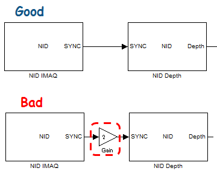

NID IMAQ
Kinectデバイスから各種のデータを取得します。Simulink Support for Kinectの各ブロックを使用する時は、固定ステップでシミュレーションをおこなう必要があります。
Contents
入力信号
- Angle (int32): Kinectセンサー絶対角度[deg]入力ポート。この入力ポートは、 Kinect SDK::Set sensor angle by Inputが選択された時に有効となります。 -27～27[deg]の範囲が有効入力値であり、それ以外の値が入力された場合は、最後の設定角度を保持します。
出力信号
- SYNC (uint32): NID Depth/Motion/Image/Skeleton/IRブロックとの同期用時間信号出力 [msec]。 SYNC出力信号は直接、NID Depth/Motion/Image/Skeleton/IRブロックのSYNC入力ポートへ、接続する必要があります。
- Angle (int32): Kinectセンサー絶対角度[deg]. 取得されたセンサー角度は-64～64[deg]の範囲になります。 この出力信号は、Kinect for Windows SDKを使用し、かつ、Kinect SDK::Read sensor angleチェックボックスをONにした場合のみ有効になります。
ブロックパラメータ
- Adjust view point to Image: NID Depth/Motion/Skeletonブロック用取得データのビューポイントをNID Imageブロック用取得データ のビューポイントに合わせる。NID Imageブロックを使用している場合のみ、この設定は有効になります。
- Mirror image: 鏡像イメージデータを取得する。この設定は全てのデバイスデータに反映されます。
- Sample time: サンプル時間は上記のReslution and FPSパラメータで設定された、1/FPS[sec] 以上に設定する必要があります。 NID IMAQブロック内部では、NIDデバイスからの安定したデータ取得を実現するために、前回のデータ取得時から、設定されたサンプル時間が過ぎるまで待機します。
- OpenNI::Resolution: OpenNI向けNIDの解像度(Resolution)と更新レート(FPS: Frame Per Second)の設定。
- OpenNI::Need PSI pose for calibration of Skeleton tracking: 骨格トラッキング用キャリブレーション時に、専用ポーズ(PSI)を必要とするか、専用ポーズ無しで自動認識させるかを選択できます。
- Kinect SDK::Set sensor angle by Input: Kinectセンサー絶対角度をブロック入力ポートから設定する。Kinectハードウェアの仕様により、センサー絶対角度の変更頻度は、内部的に1秒に一回になります。
- Kinect SDK::Sensor angle: Kinectセンサー絶対角度[deg]。Sensor angleパラメータ値は、-27～27 [deg]の範囲に設定する必要があります。
- Kinect SDK::Read sensor angle: Kinectセンサー絶対角度[deg]をSimulink上で取得するための設定。
- Kinect SDK::Near mode: Kinect Near Modeの設定パラメータ。Near modeでは、センサ前方の約40[cm]までの3D深度を測定することが可能になります。
- Kinect SDK::Seated mode: Kinect Seated Modeの設定パラメータ。Seated modeでは、上半身のみが骨格トラッキングの対象となります。
- Kinect SDK::Skeleton smoothing parameters: Smoothing / Correction / Prediction / Jitter Radius / Max Deviation Radiusという5つのパラメータ値を設定することができます。 デフォルト値は[0.5 0.5 0.5 0.05 0.04]になります。(各パラメータの説明はKinect SDK C++ API Referenceからの引用になります。)
- Smoothing: Smoothing parameter in the range [0.0, 1.0] inclusive. A higher value corresponds to more smoothing. Passing 0 causes the raw data to be returned. As the smoothing value is increased responsiveness to the raw data decreases; therefore, increased smoothing leads to increased latency.
- Correction: Correction parameter in the range [0.0, 1.0] inclusive. A higher value corrects toward the raw data more quickly, a lower value corrects more slowly and appears smoother.
- Prediction: The number of frames to predict into the future, which must be greater than or equal to zero. Values greater than 0.5 will likely lead to overshoot when the data changes quickly; dampen the overshoot effect by using a smaller value of Max Deviation Radius.
- Jitter Radius: The jitter-reduction radius, in meters. Any jitter beyond this radius is clamped to the radius.
- The maximum radius (in meters) that filtered positions can deviate from raw data. Filtered values that would exceed this radius from the raw data are clamped at this distance, in the direction of the filtered value.
- Kinect SDK::Infer skeleton joints position: 骨格トラッキングが諸条件により、上手く行えなかった場合、過去のデータから推定するか(＝ON) 、否か(=OFF)を設定できます。
NID IMAQブロックと他のNIDブロックの接続方法
